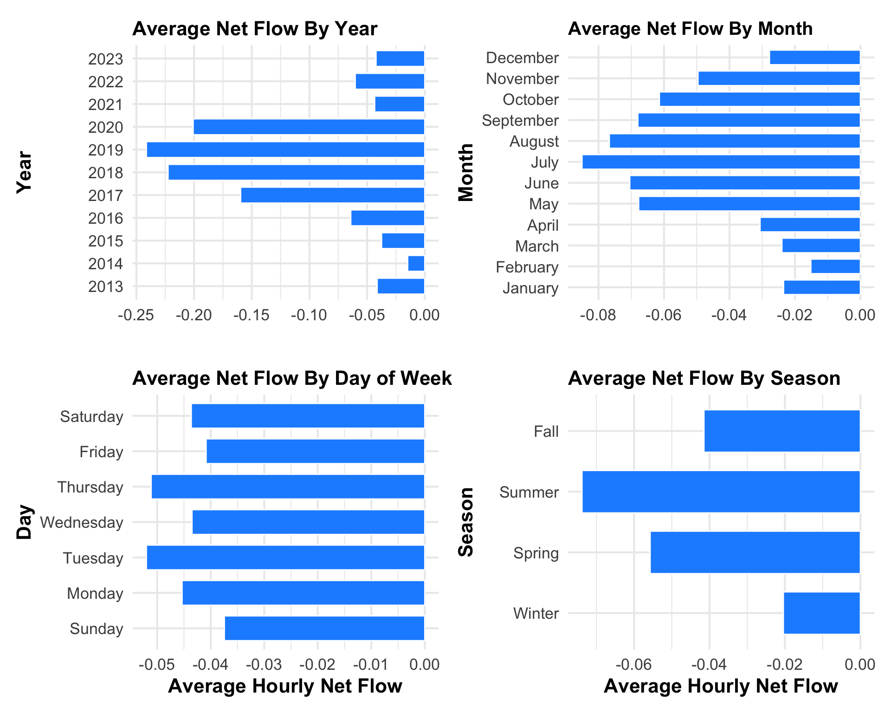
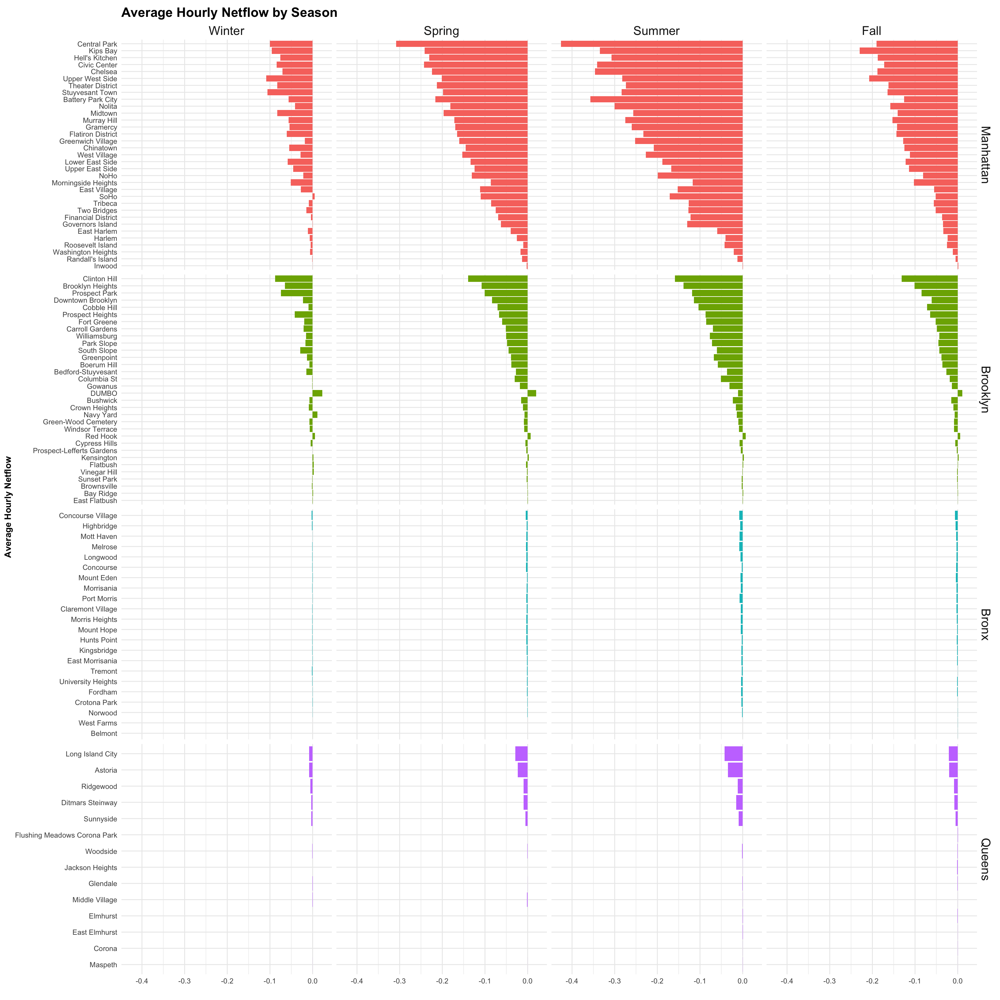
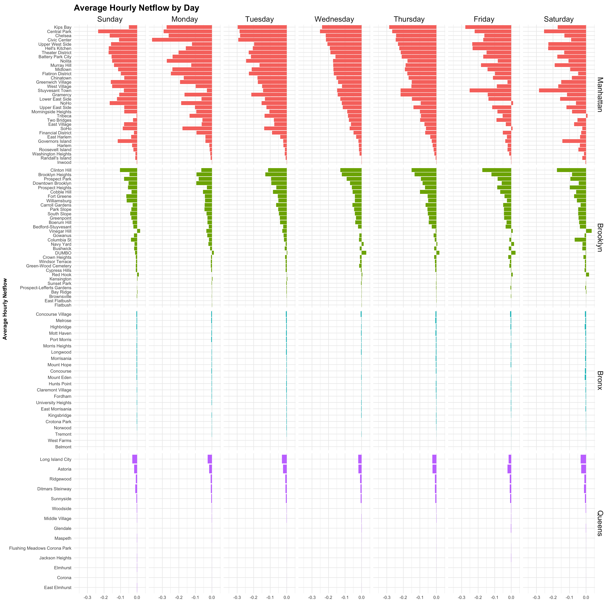

# Set the working directory to the project root (do this once per session)# Read the file using a relative pathfile_path <-"/Users/karmaistanbouli/Desktop/Columbia-MSDS/NYC_CitiBike_Viz/⭐️Project Code/Cleaned Data p/Grouped_Data"# Read "data_by_month.rds" into a dataframe named "data_by_month"data_by_month <-readRDS(file.path(file_path, "data_by_month.rds"))# Read "data_by_year.rds" into a dataframe named "data_by_year"data_by_year <-readRDS(file.path(file_path, "data_by_year.rds"))# Read "data_by_weekdy.rds" into a dataframe named "data_by_weekdy"data_by_weekdy <-readRDS(file.path(file_path, "data_by_weekdy.rds"))# Read "data_by_season.rds" into a dataframe named "data_by_season"data_by_season <-readRDS(file.path(file_path, "data_by_season.rds"))data_by_day <-readRDS(file.path(file_path, "data_by_day.rds"))
fetch_bike_data <-function(api_url) {# Sending a GET request to the API response <-GET(api_url)# Checking the status of the responseif (status_code(response) ==200) {# Parsing the content of the response to a list api_data <-content(response, "parsed") } else {cat("Failed to retrieve data: HTTP status", status_code(response), "\n")return(NULL) } station_raw <- api_data$data$stations# Transforming the nested list into a dataframe databike_raw <-map_dfr(station_raw, ~flatten_df(as.data.frame(.x)))return(databike_raw)}url <-"https://gbfs.lyft.com/gbfs/2.3/bkn/en/station_information.json"databike_raw<-fetch_bike_data(url)api_dict <-subset(databike_raw, select =c("name", "lat", "lon", "capacity"))
3.1.5 Creating Function to Add Station Info to DF
Code
#function to add station info from api to dataframeadd_station_info <-function(df, api_dict) {# Convert station_info_dict to a dataframe# Convert lon, lat, and capacity to numeric api_dict[, c("lon", "lat", "capacity")] <-lapply(api_dict[, c("lon", "lat", "capacity")], as.numeric)# Merge df with station_info_df based on station name result <-left_join(df, api_dict, by =c("variable"="name"))# Return the resultreturn(result)}
3.1.6 Merge Melted Data with Station Information
Code
# joining station info from api to each dataframedata_by_year$variable <-as.character(data_by_year$variable)data_by_month$variable <-as.character(data_by_month$variable)data_by_season$variable <-as.character(data_by_season$variable)data_by_weekdy$variable <-as.character(data_by_weekdy$variable)data_by_year$year <-as.numeric(data_by_year$year)data_by_month$month <-as.numeric(data_by_month$month)# joining data by year with api data using functiondata_by_year_join <-add_station_info(data_by_year, api_dict)data_by_month_join <-add_station_info(data_by_month, api_dict)data_by_weekdy_join <-add_station_info(data_by_weekdy, api_dict)data_by_season_join <-add_station_info(data_by_season, api_dict)data_by_day_join <-add_station_info(data_by_day, api_dict)data_by_day_join$day <-as.Date(data_by_day_join$day, format ="%Y-%m-%d")#Changing lon lat to numericdata_by_year_join$lat <-as.numeric(data_by_year_join$lat)data_by_year_join$lon <-as.numeric(data_by_year_join$lon)data_by_month_join$lat <-as.numeric(data_by_month_join$lat)data_by_month_join$lon <-as.numeric(data_by_month_join$lon)
3.1.7 Function to add Neighborhood Data to Merged Data
Code
suppressMessages({# Load GeoJSON fileneighborhood_boundaries <-st_read("⭐️Project Code/ny-nbhd.geoj")# Function to perform spatial joinadd_nbhd_info <-function(data_frame) {# Assuming your station data has latitude and longitude columns named "lat" and "lon" stations_sf <-st_as_sf(data_frame, coords =c("lon", "lat"), crs =4326)# Perform spatial join joined_data <-st_join(stations_sf, neighborhood_boundaries)return(joined_data)}})
Reading layer `ny-nbhd' from data source
`/Users/karmaistanbouli/Desktop/Columbia-MSDS/NYC_CitiBike_Viz/⭐️Project Code/ny-nbhd.geoj'
using driver `GeoJSON'
Simple feature collection with 310 features and 4 fields
Geometry type: POLYGON
Dimension: XY
Bounding box: xmin: -74.25559 ymin: 40.49613 xmax: -73.70001 ymax: 40.91553
Geodetic CRS: WGS 84
We begin our exploration with an overview of Citi Bike’s ridership growth since its inception in 2013. In our research, we use average hourly inflow and outflow of bikes to and from stations as an indicator of ridership growth and overall demand for the bike-sharing service.
3.2.1 Hourly Average Citi Bike Flow by Day
The following chart showcases the evolving trends in activity over the years. Each bar on the graph represents the average hourly inflow of riders across all stations on a specific day.
What we observe is that average hourly inflow stayed consistent throughout the years. Although we would expect an increasing average considering the company’s booming popularity, the consistent average hourly inflow makes sense since the number of stations increased from 330 in 2013 to almost 2,000 today.
The chart also reveals cyclical patterns showing periodic peaks and troughs throughout the years. These cycles suggest the influence of external factors such as season, weather and day of week. Note: we discuss the visible gap in the second half of 2021 in our missing data analysis.
Warning: `position_stack()` requires non-overlapping x intervals
In the chart below, we narrow our focus on days between 2017 and 2019. With this view, monthly and seasonal trends are more obvious. It is not surprising that average hourly inflow is lower in the colder month and higher in the Summer and Fall.
3.2.3 Citi Bike Hourly Average Flow by Day of Week
We can also aggregate by day of week to see how average hourly inflow differs across different days of the week. Trends are not very obvious here but we can still see that ridership is higher on weekdays, unexpectedly:
Code
# changing days from 1-7 to actual day namesdata_by_weekday <- data_by_weekdy %>%filter(total_flow!=0) %>%mutate(weekday =factor(weekday, levels =c("Sunday","Monday", "Tuesday", "Wednesday", "Thursday", "Friday", "Saturday")) )# aggregating data by day of weekdata_by_weekdy_agg <- data_by_weekdy %>%group_by(weekday) %>%summarize(avg_inflow =mean(inflow, na.rm =TRUE),avg_outflow =mean(outflow, na.rm =TRUE),avg_netflow =mean(net_flow, na.rm =TRUE),avg_totalflow =mean(total_flow, na.rm =TRUE),total_inflow =sum(inflow, na.rm =TRUE),total_outflow =sum(outflow, na.rm =TRUE),totalflow =sum(inflow, na.rm =TRUE) )#pivot longeravg_by_weekdy_long <- data_by_weekdy_agg %>%pivot_longer(cols =c("avg_inflow", "avg_outflow"), names_to ="flow_type", values_to ="avg_flow")# reorder the days of the weekavg_by_weekdy_long$weekday <-fct_relevel(avg_by_weekdy_long$weekday, "Sunday", "Monday", "Tuesday", "Wednesday", "Thursday", "Friday", "Saturday")plot6 <- avg_by_weekdy_long %>%ggplot(aes(x = weekday, y = avg_flow, fill = flow_type)) +geom_bar(stat ="identity") +labs(title ="Average Daily Flow by Day of Week",x ="Day",y ="Average Daily Flow") +theme_minimal() +theme(axis.title =element_text(face ="bold"),plot.title =element_text(size =15,face ="bold", vjust =0)) +scale_fill_manual(values =c("avg_inflow"="dodgerblue", "avg_outflow"="forestgreen"))plot6

3.3 Citi Bike Hourly Average Bike Net Flow
Now that we have seen how average hourly total flow differs by year, season, month, and day of week, we will consider net flow as another metric to analyze station data. Net flow provides valuable insights into the dynamics of bike activity within a station, offering a nuanced understanding of the balance between incoming and outgoing bikes over time. The average hourly net flow, when aggregated by different temporal dimensions such as year, season, or month, serves as a key indicator of station popularity and usage patterns.
A positive net flow indicates a higher influx of bikes, possibly suggesting that stations are more popular entry points, potentially located in busy or central areas.While negative net flow highlights stations with greater bike outflow, suggesting they are favored as exit points, possibly located near residential or recreational areas. Analyzing net flow trends over various time intervals allows for the identification of seasonal or monthly variations.
3.3.1 Citi Bike Hourly Average Net Flow by Year, Month, Season, Day
The diverging bar charts below reveals that on average, net flow is negative across stations.
Code
data_by_year_agg <- data_by_year %>%filter(total_flow!=0) %>%group_by(year) %>%summarize(avg_inflow =mean(inflow, na.rm =TRUE),avg_outflow =mean(outflow, na.rm =TRUE),avg_netflow =mean(net_flow, na.rm =TRUE), avg_totalflow =mean(total_flow, na.rm =TRUE),total_inflow =sum(inflow, na.arm =TRUE),total_outflow =sum(outflow, na.arm =TRUE),totalflow =sum(inflow, na.arm =TRUE) )plot7 <- data_by_year_agg %>%ggplot(aes(x = avg_netflow, y =factor(year), fill =factor(sign(avg_netflow)))) +geom_bar(stat ="identity", position ="stack", color ="white", width =0.7) +labs(title ="Average Net Flow By Year",x ="",y ="Year") +scale_fill_manual(values =c("-1"="dodgerblue", "1"="mediumseagreen"), guide =FALSE) +theme_minimal() +theme(axis.title =element_text(face ="bold"),plot.title =element_text(size =15,face ="bold", vjust =0))# Show the plotplot8 <- data_by_month_agg %>%ggplot(aes(x = avg_netflow, y =factor(month), fill =factor(sign(avg_netflow)))) +geom_bar(stat ="identity", position ="stack", color ="white", width =0.7) +labs(title ="Average Net Flow By Month",x ="",y ="Month") +scale_fill_manual(values =c("-1"="dodgerblue", "1"="mediumseagreen"), guide ="none") +theme_minimal() +theme(axis.title =element_text(face ="bold"),plot.title =element_text(size =15,face ="bold", vjust =0))data_by_weekdy_agg$weekday <-fct_relevel(data_by_weekdy_agg$weekday, "Sunday", "Monday", "Tuesday", "Wednesday", "Thursday", "Friday", "Saturday")plot9 <- data_by_weekdy_agg %>%ggplot(aes(x = avg_netflow, y =factor(weekday), fill =factor(sign(avg_netflow)))) +geom_bar(stat ="identity", position ="stack", color ="white", width =0.7) +labs(title ="Average Net Flow By Day of Week",x ="Average Hourly Net Flow",y ="Day") +scale_fill_manual(values =c("-1"="dodgerblue", "1"="mediumseagreen"), guide =FALSE) +theme_minimal() +theme(axis.title =element_text(face ="bold"),plot.title =element_text(size =15,face ="bold", vjust =0))# Show the plotplot10 <- data_by_season_agg %>%ggplot(aes(x = avg_netflow, y =factor(season), fill =factor(sign(avg_netflow)))) +geom_bar(stat ="identity", position ="stack", color ="white", width =0.7) +labs(title ="Average Net Flow By Season",x ="Average Hourly Net Flow",y ="Season") +scale_fill_manual(values =c("-1"="dodgerblue", "1"="mediumseagreen"), guide =FALSE) +theme_minimal() +theme(axis.title =element_text(face ="bold"),plot.title =element_text(size =15,face ="bold", vjust =0))nf_plots <- plot7 + plot8 + plot9 + plot10 +plot_layout(ncol =2, guides ='collect', widths =c(1, 1)) # Display the combined plotprint(nf_plots)
Warning: The `guide` argument in `scale_*()` cannot be `FALSE`. This was deprecated in
ggplot2 3.3.4.
ℹ Please use "none" instead.
3.4 Citi Bike Hourly Average Flow by Neighborhood
As it is clear that Citi Bike average hourly flow remained consistent over the years, subject to some cyclical trends due to external factors such as weather and season, we will proceed with more interesting data exploration. More specifically, we are going to explore how growth is distributed across different neighborhoods and boroughs of New York.
3.4.1 Hourly Average Flow by Neighborhood and Year
The following charts shows average hourly inflow and outlflow across stations from 2013 to October 2023, aggregated by neighborhood. The two plot gives us the same result, which is that activity, both inflow and outflow, is concentrated in Manhattan.The graph shows that the neighborhoods with the highest hourly average inflow of bikes to stations are all in Manhattan, followed by Brooklyn. Neighborhoods in the Bronx and Queens show very low activity.
3.5 Citi Bike Hourly Average Net Flow by Neighborhood
3.5.1 Hourly Average Net flow by Neighborhood Over the Years
In the chart below, we plotted average hourly net flow over the years across stations, faceted by neighborhood. Again, we can see that the large majority of stations have a negative net flow, furthermore, this chart shows that the stations in Manhattan are by far the most popular.
Code
# Filter and reorder datadata_by_year_nbhd <- data_by_year_nbhd %>%filter(avg_netflow !=0) %>%mutate(borough =fct_reorder(borough, abs(avg_netflow), .desc =TRUE),neighborhood =fct_reorder(neighborhood, abs(avg_netflow), .desc =FALSE) )# Plotting the data with filtering inside ggplotplot16 <- data_by_year_nbhd %>%filter(avg_netflow !=0) %>%ggplot(aes(x = avg_netflow, y = neighborhood, fill = borough)) +geom_bar(stat ="identity") +labs(title ="Average Hourly Netflow Over the Years by Neighborhood",x =" ",y ="Average Hourly Netflow") +theme_minimal() +facet_wrap(~borough, ncol =1, scales ="free_y") +theme(legend.position ="none", strip.text =element_text(size =15), # Adjust the font size hereaxis.title =element_text(face ="bold"),plot.title =element_text(size =15, face ="bold", vjust =0))plot16

3.5.2 Hourly Average Net Flow by Neighborhood and Season
The following charts re-emphasize how average net flow is negative across seasons, stations, and neighborhoods. With Manhattan in the lead again, followed by Brooklyn. The neighborhoods with the highest net outflow are Central Park in Manhattan and Prospect Park in Brooklyn, followed by neighborhoods surrounding the parks and recreational areas like the Upper West Side, the Theatre District, Battery Park, Prospect Heights, to name a few.
This suggests that demand for Citi Bikes are higher in popular recreational areas, potentially as an activity rather than a means of transportation, but can also suggest that riders use the bikes to leave those popular areas.
In terms of station and bike re-balancing and bike availability, the data suggests that demand is excessive in those highlighted neighborhoods where situations with a shortage of bikes are more likely.
Code
# Filter and reorder datadata_by_season_nbhd <- data_by_season_nbhd %>%filter(avg_netflow !=0) %>%mutate(borough =fct_reorder(borough, abs(avg_netflow), .desc =TRUE),neighborhood =fct_reorder(neighborhood, abs(avg_netflow), .desc =FALSE) )# Plotting the data with filtering inside ggplotplot17 <- data_by_season_nbhd %>%filter(avg_netflow !=0) %>%ggplot(aes(x = avg_netflow, y = neighborhood, fill = borough)) +geom_bar(stat ="identity") +labs(title ="Average Hourly Netflow by Season",x =" ",y ="Average Hourly Netflow") +theme_minimal() +facet_grid(borough ~ season, scales ="free_y") +theme(legend.position ="none", strip.text =element_text(size =15), # Adjust the font size hereaxis.title =element_text(face ="bold"),plot.title =element_text(size =15, face ="bold", vjust =0))plot17

3.5.3 Hourly Average Net Flow by Neighborhood and Day of Week
Code
# Filter and reorder datadata_by_weekdy_nbhd <- data_by_weekdy_nbhd %>%filter(avg_netflow !=0) %>%mutate(borough =fct_reorder(borough, abs(avg_netflow), .desc =TRUE),neighborhood =fct_reorder(neighborhood, abs(avg_netflow), .desc =FALSE) )# Plotting the data with filtering inside ggplotplot18 <- data_by_weekdy_nbhd %>%filter(avg_netflow !=0) %>%ggplot(aes(x = avg_netflow, y = neighborhood, fill = borough)) +geom_bar(stat ="identity") +labs(title ="Average Hourly Netflow by Day",x =" ",y ="Average Hourly Netflow") +theme_minimal() +facet_grid(borough ~fct_relevel(weekday, "Sunday", "Monday", "Tuesday", "Wednesday", "Thursday", "Friday", "Saturday"),scales ="free_y") +theme(legend.position ="none", strip.text =element_text(size =15), # Adjust the font size hereaxis.title =element_text(face ="bold"),plot.title =element_text(size =15, face ="bold", vjust =0))plot18